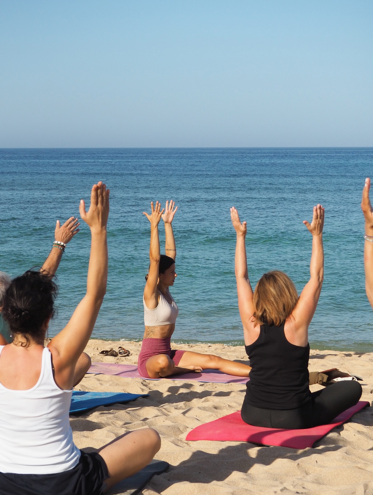

Yoga y movimiento
Sesiones suaves para despertar el cuerpo, escuchar cómo estás y empezar el día con otra energía.
 Consultar fechas ↗
Consultar fechas ↗
03 — Bienestar
Propuestas sencillas para moverte, respirar, explorar y disfrutar de tu tiempo sin una agenda obligatoria.
Preguntar por programas ↗A tu manera
Hay quien empieza con yoga y quien prefiere un café largo. Hay quien se pierde caminando y quien encuentra su sitio en la terraza. Diseñamos el entorno para que elijas.
Sesiones suaves para despertar el cuerpo, escuchar cómo estás y empezar el día con otra energía.
Momentos de pausa, respiración y atención plena para bajar el ruido de fuera.
Caminos, pinares, playas y atardeceres para conocer la costa a tu propio ritmo.
Comidas, conversaciones y planes espontáneos con personas que vienen a lo mismo que tú.
Cuéntanos qué necesitas y te contamos qué programa puede encajar mejor contigo.
Hablar con nosotros ↗